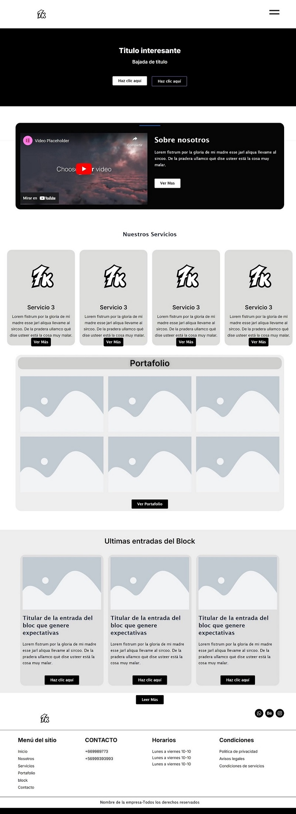
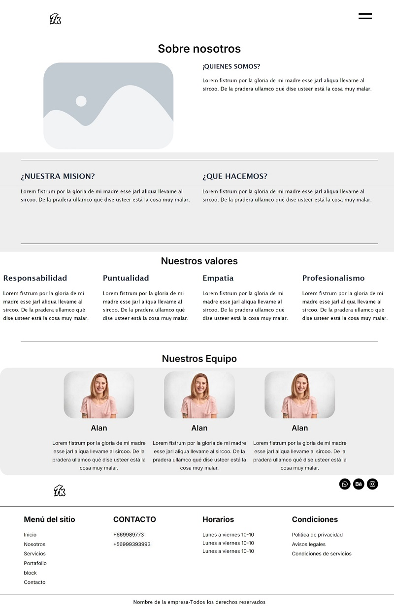
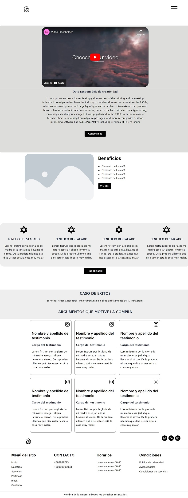

Descripción del proyecto
Desarrollé el sitio web oficial para nuestra futura agencia de diseño, utilizando WordPress como plataforma base para maximizar la flexibilidad y funcionalidad. La página fue concebida para ser una experiencia intuitiva tanto para los visitantes como para el equipo de gestión interna. La estructura incluye secciones dedicadas a nuestro portafolio, una presentación detallada de los servicios ofrecidos y un blog orientado a compartir testimonios de nuestros clientes.
Tiempo de desarrollo
15 días
Cliente
Agencia 7K
¿Necesitas un diseño parecido a este?
ContáctameTecnologías utilizadas
Más sobre este proyecto


